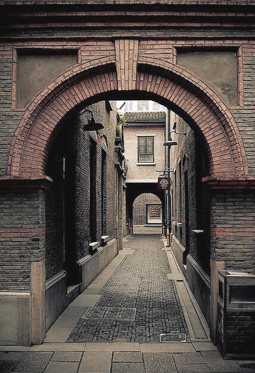

Architecture

1920年代の一般市民の共同住宅である「石庫門」と呼ばれる建築様式は現在都市化が進むなか貴重な文化資産として、
その多くがブティックやレストランとして改築され、保存されている。
一方上海は他のどの都会よりも多くのアールデコ建築を持っていると言われている。
上海の急速な成長は現代建築様式に恩恵を与える。
1920年代の一般市民の共同住宅である「石庫門」と呼ばれる建築様式は現在都市化が進むなか貴重な文化資産として、
その多くがブティックやレストランとして改築され、保存されている。
一方上海は他のどの都会よりも多くのアールデコ建築を持っていると言われている。
上海の急速な成長は現代建築様式に恩恵を与える。
出典：dezeen
©ENZEN. All Rights Reserved.